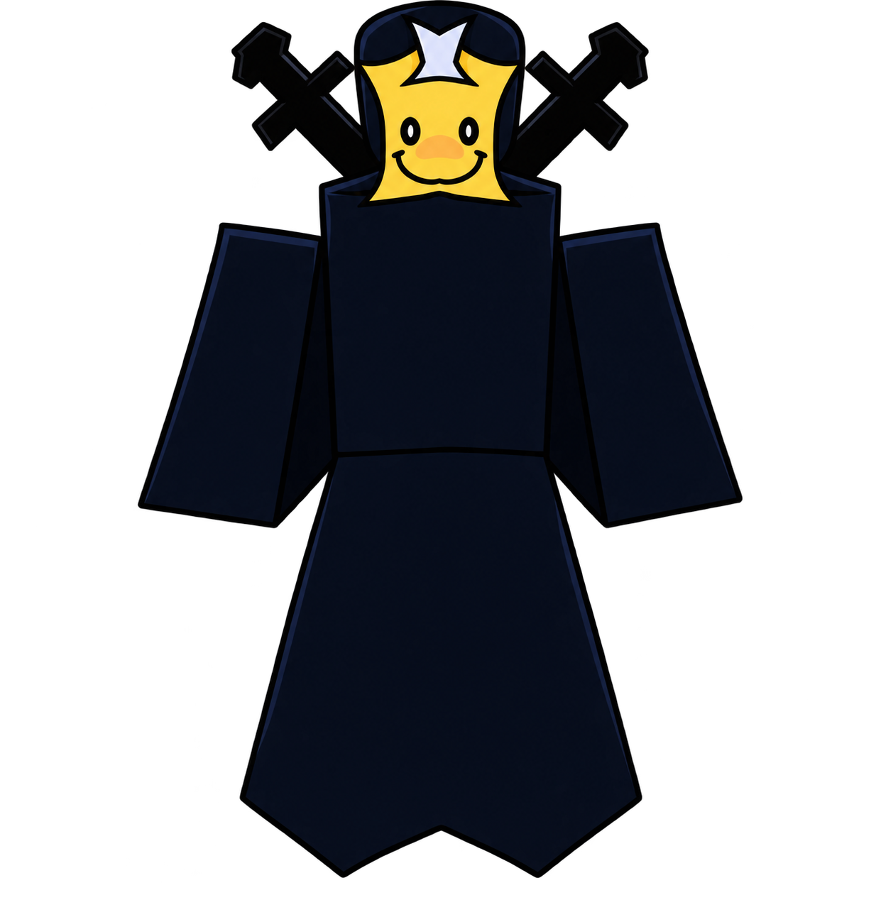
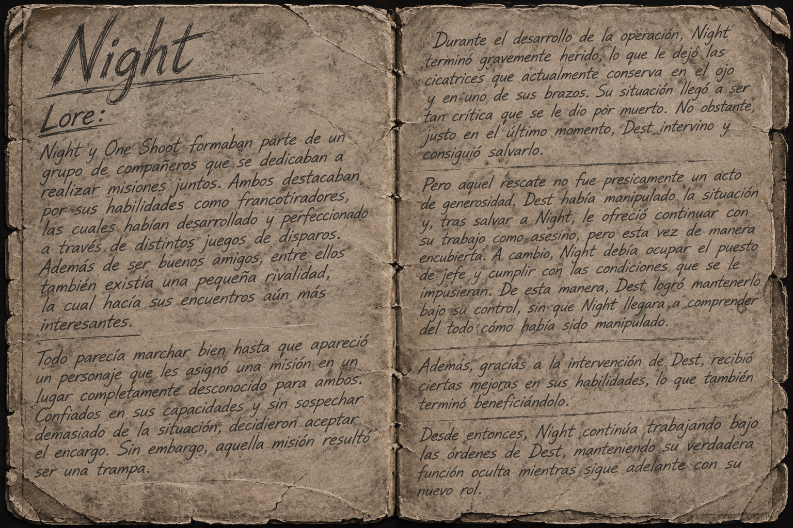
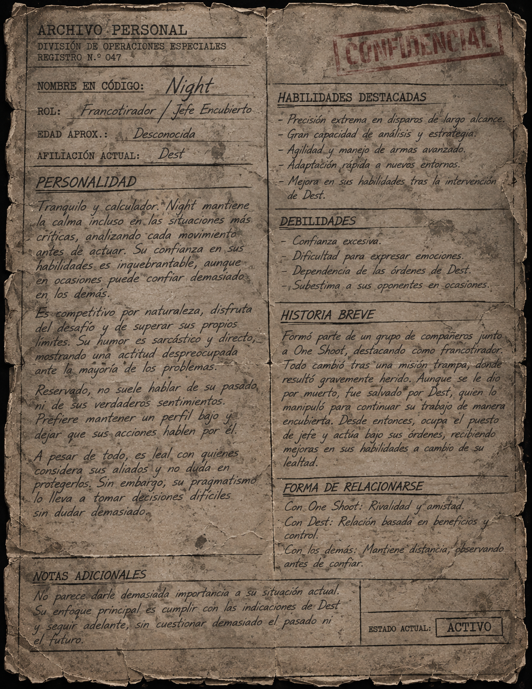

PERSONAJE
ARCHIVO DE PERSONAJE / DESTKARD
ORIGEN
Misiones de francotirador
Night es un francotirador experimentado, conocido por su precisión y habilidad en combate. De carácter tranquilo y reservado, suele mantener una actitud despreocupada incluso ante situaciones complicadas. No parece tener demasiadas preocupaciones: cumple con su trabajo y deja que sus habilidades hablen por él.

